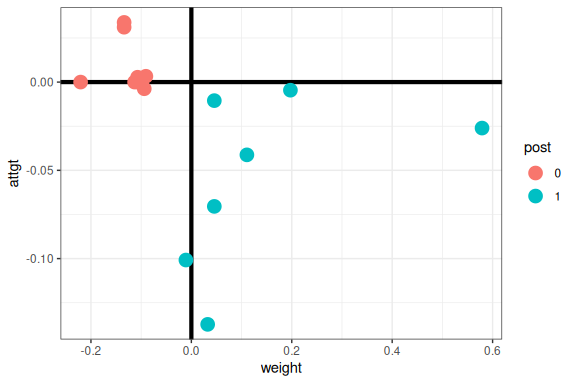
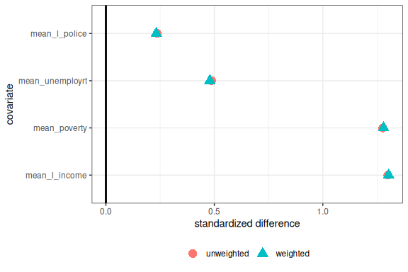

twfeweights computes the implicit weights that two-way fixed effects (TWFE) regressions and other difference-in-differences estimators place on underlying comparisons, so you can see how a regression combines them into a single number. It covers two settings:
- Staggered treatment adoption without covariates. Recover the weights a TWFE regression places on each group-time average treatment effect, (de Chaisemartin and D’Haultfoeuille, 2020; Goodman-Bacon, 2021), and compare them with the weights behind the overall average treatment effects of Callaway and Sant’Anna (2021).
- Covariates. Write TWFE regressions, augmented inverse probability weighting (AIPW) and regression adjustment as reweighting estimators, and check how well their implicit weights balance covariates (Caetano and Callaway, 2026).
Installation
# from CRAN
install.packages("twfeweights")
# development version from GitHub
# install.packages("remotes")
remotes::install_github("bcallaway11/twfeweights")TWFE weights on group-time average treatment effects
Estimate the with did::att_gt(), using the never-treated group and a universal base period, then pass the result to twfe_weights():
library(twfeweights)
data(mpdta, package = "did")
attgt <- did::att_gt(
yname = "lemp", tname = "year", idname = "countyreal",
gname = "first.treat", data = mpdta,
control_group = "nevertreated", base_period = "universal",
bstrap = FALSE, cband = FALSE
)
tw <- twfe_weights(attgt)
# the weighted sum of ATT(g,t) is the TWFE coefficient
sum(tw$weights_df$weight * tw$weights_df$attgt)
#> [1] -0.03654894
mpdta$D <- 1 * (mpdta$year >= mpdta$first.treat & mpdta$first.treat > 0)
coef(fixest::feols(lemp ~ D | countyreal + year, data = mpdta))
#> D
#> -0.03654894
ggtwfeweights(tw)
Some post-treatment cells get negative weight, and pre-treatment cells get non-zero weight. attO_weights() and att_simple_weights() give the weights behind and for comparison.
Covariate balance
With covariates, implicit_twfe_weights() decomposes the TWFE coefficient into weighted comparisons, and twfe_cov_bal() reports how well the implicit weights balance covariates (here, for the effect of stand-your-ground laws on homicides):
data(castle, package = "causaldata")
castle <- as.data.frame(castle)
castle$G <- BMisc::get_group(castle, "sid", tname = "year", treatname = "post")
twm <- implicit_twfe_weights(
yname = "l_homicide", tname = "year", idname = "sid", gname = "G",
xformula = ~ l_police + unemployrt, base_period = "gmin1", data = castle
)
twm <- twfe_cov_bal(twm, ~ l_police + unemployrt + poverty + l_income)
ggtwfeweights(twm)
implicit_aipw_weights() and aipw_cov_bal() do the same for AIPW and regression adjustment; two_period_reg_weights() and two_period_aipw_weights() cover the two-period case.
Learn more
-
vignette("twfe-weights"): TWFE weights without covariates. -
vignette("covariate-balance"): implicit weights and covariate balance with covariates.
References
Caetano, Carolina and Brantly Callaway. “Difference-in-Differences when Parallel Trends Holds Conditional on Covariates.” Working paper (2026). arXiv:2406.15288.
Callaway, Brantly and Pedro H. C. Sant’Anna. “Difference-in-Differences with Multiple Time Periods.” Journal of Econometrics 225.2 (2021): 200-230.
de Chaisemartin, Clement and Xavier D’Haultfoeuille. “Two-Way Fixed Effects Estimators with Heterogeneous Treatment Effects.” American Economic Review 110.9 (2020): 2964-2996.
Goodman-Bacon, Andrew. “Difference-in-Differences with Variation in Treatment Timing.” Journal of Econometrics 225.2 (2021): 254-277.